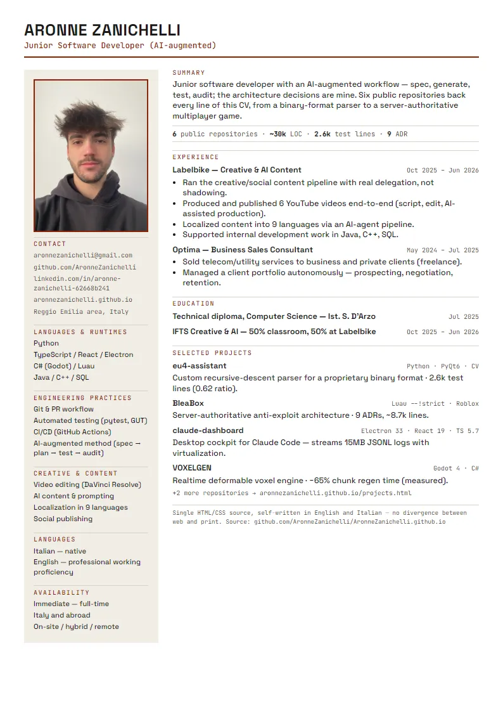

Junior Software Developer (AI-augmented)
Aronne Zanichelli
Code, method, evidence.
Junior software developer working AI-augmented — every claim on this site links to a repository.
- ITIS diploma 2025
- IFTS Creative & AI 2026
- 6 repos
- IT/EN
Work
eu4-assistant
Alpha Python · PyQt6 · computer visionA desktop companion for Europa Universalis IV that reads the game's proprietary save format and its screen, not just its API.
02claude-dashboard
Paused Electron · React · TypeScriptA desktop cockpit for running Claude Code across Windows and WSL2 from one window, with a self-critical account of its own tech debt.
03BleaBox
Active Luau (strict) · RobloxA multiplayer action-RPG on Roblox where the server, not the client, decides what actually happened.
04VOXELGEN
Paused Godot 4 · C#A realtime deformable voxel engine that regenerates terrain 65% faster than its first working version.
05UNDERGENESIS
Paused Godot 4 · GDScriptA procedural evolutionary sandbox built test-first, with save files that survive their own migrations.
06Labelbike
Completed Video · AI pipelineA video pipeline that turns one script into six published videos and nine language versions.
Method
spec → plan → test → audit
Spec → plan → test → audit — every project, every time.
Agents execute. I decide the architecture and write it down as ADRs.
claude-dashboard ships its own self-critical audit, in the same tone as its README.
Read the full methodTimeline
I'm Aronne Zanichelli, a junior software developer working AI-augmented. I write code, but I also write the spec, the plan, and the audit around it — the discipline is the point, not just the output. My path here wasn't linear: a technical diploma, a year selling utility contracts, then a creative-and-AI program that put me inside a real production pipeline. Along the way I built six projects I still maintain — none of them portfolio filler; all of them on GitHub, with commits, tests, and the occasional documented mistake. I'm looking for a first developer role, in Italy or abroad, where "I can prove it" counts for more than "I'm passionate about it."
ITIS technical diploma (Perito Informatico) — completed July 2025.
Optima — business sales consultant, freelance. Commercial soft skills: client relationships, negotiation, autonomy.
Not a technical role.
IFTS Creative & AI — vocational program, concluded. Half coursework, half on-the-job at Labelbike.
Labelbike — formally an internship, in practice an operational role with real delegation: creative/social/AI content pipeline plus development support (Java, C++, SQL).
Skills, with evidence
No bars, no percentages — every skill below links to the project that proves it.
| Skill | Proven in |
|---|---|
| Python | eu4-assistant: recursive-descent parser, computer vision, 0.62 test ratio |
| TypeScript / Electron / React | claude-dashboard: 10.4k-LOC desktop cockpit, 15MB JSONL streaming |
| C# | VOXELGEN: Marching Cubes/Transvoxel, threading, -65% regen time |
| GDScript | UNDERGENESIS: 7.4k lines, test-first with GUT, versioned saves |
| Luau (strict) | BleaBox: server-authoritative architecture, 9 ADRs |
| Git / PR workflow | all six repos: branch-per-feature, documented decisions |
| Testing | eu4-assistant (2.6k lines, 0.62 ratio) and UNDERGENESIS (test-first, GUT) |
| Java, C++, SQL | Labelbike: dev support in a production context — not yet at project-ownership depth |
| Video editing, AI content | Labelbike: 6 published videos, 9-language localization via agents |
Get in touch
Have a role, a project, or a question? Write me directly, or use the form below.
Prefer email? aronnezanichelli@gmail.com · GitHub · LinkedIn · Download CV (PDF)
